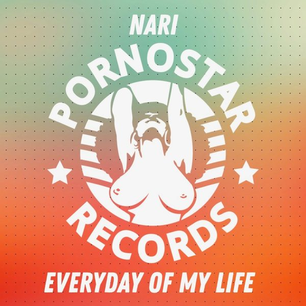

I 20 dischi
 1
Easy LadyRivaz&Botteghi
1
Easy LadyRivaz&Botteghi

2 Everyday Of My LifeNari 3
BailaElastic Heads and DJ Ross
3
BailaElastic Heads and DJ Ross
 4
CloserFlashmob
4
CloserFlashmob
 5
Ready 2 Dance feat. Anelisa LamolaMartin Ikin, Biscits
5
Ready 2 Dance feat. Anelisa LamolaMartin Ikin, Biscits
 6
Open UpFelguk & INGEK
6
Open UpFelguk & INGEK
 7
GlueNiiko x SWAE & Zack Martino feat. Kyle Reynolds
7
GlueNiiko x SWAE & Zack Martino feat. Kyle Reynolds
 8
Hide U (Tinlicker Remix)Sian Evans
9
Day dreamBenny Benassy & Bloom Twins
8
Hide U (Tinlicker Remix)Sian Evans
9
Day dreamBenny Benassy & Bloom Twins
 10
In Love with YouFedde Le Grand & Melo.Kids
10
In Love with YouFedde Le Grand & Melo.Kids
 11
TogetherThe Martinez Brothers, Carnage, Mike Dean, Elderbrook
11
TogetherThe Martinez Brothers, Carnage, Mike Dean, Elderbrook
 12
SunsetJLV
12
SunsetJLV
 13
Lick itLovra
13
Lick itLovra
 14
Fall throughRaptures & Faith
14
Fall throughRaptures & Faith
 15
New Love (Armand Van Helden Remix)Diplo, Mark Ronson, Ellie Goulding, Silk City
15
New Love (Armand Van Helden Remix)Diplo, Mark Ronson, Ellie Goulding, Silk City
 16
StrongerSam Feldt
16
StrongerSam Feldt
 17
Stay MineTimmy Trumpet x Afrojack
17
Stay MineTimmy Trumpet x Afrojack
 18
Thought of Losing HerTWIIG
18
Thought of Losing HerTWIIG
 19
CloserMaurice Lessing
19
CloserMaurice Lessing
 20
GipsyAbel Ramos, Mimmo Errico
20
GipsyAbel Ramos, Mimmo Errico
La tracklist
- 1 Easy Lady Rivaz&Botteghi D:Vision
- 2 Everyday Of My Life Nari PornoStar Records
- 3 Baila Elastic Heads and DJ Ross Time Records
- 4 Closer Flashmob Toolroom Records
- 5 Ready 2 Dance feat. Anelisa Lamola Martin Ikin, Biscits Ultra Records
- 6 Open Up Felguk & INGEK Armada Music
- 7 Glue Niiko x SWAE & Zack Martino feat. Kyle Reynolds Armada Music
- 8 Hide U (Tinlicker Remix) Sian Evans Armada Music
- 9 Day dream Benny Benassy & Bloom Twins Ultra Records
- 10 In Love with You Fedde Le Grand & Melo.Kids Darklight Recordings
- 11 Together The Martinez Brothers, Carnage, Mike Dean, Elderbrook Ultra Records
- 12 Sunset JLV Hexagon
- 13 Lick it Lovra Hexagon
- 14 Fall through Raptures & Faith Hexagon
- 15 New Love (Armand Van Helden Remix) Diplo, Mark Ronson, Ellie Goulding, Silk City Columbia
- 16 Stronger Sam Feldt Heartfeldt Records
- 17 Stay Mine Timmy Trumpet x Afrojack Spinnin' Records
- 18 Thought of Losing Her TWIIG CONTROVERSIA
- 19 Closer Maurice Lessing Hexagon
- 20 Gipsy Abel Ramos, Mimmo Errico Inferiae Records